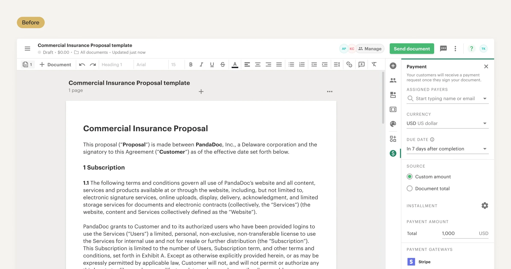
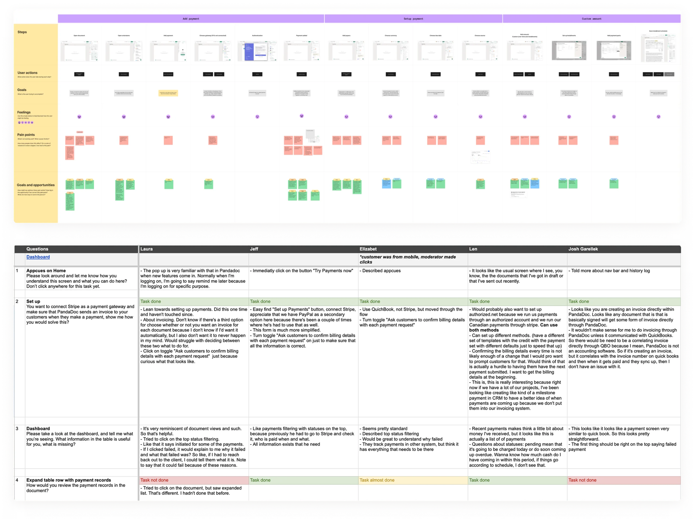
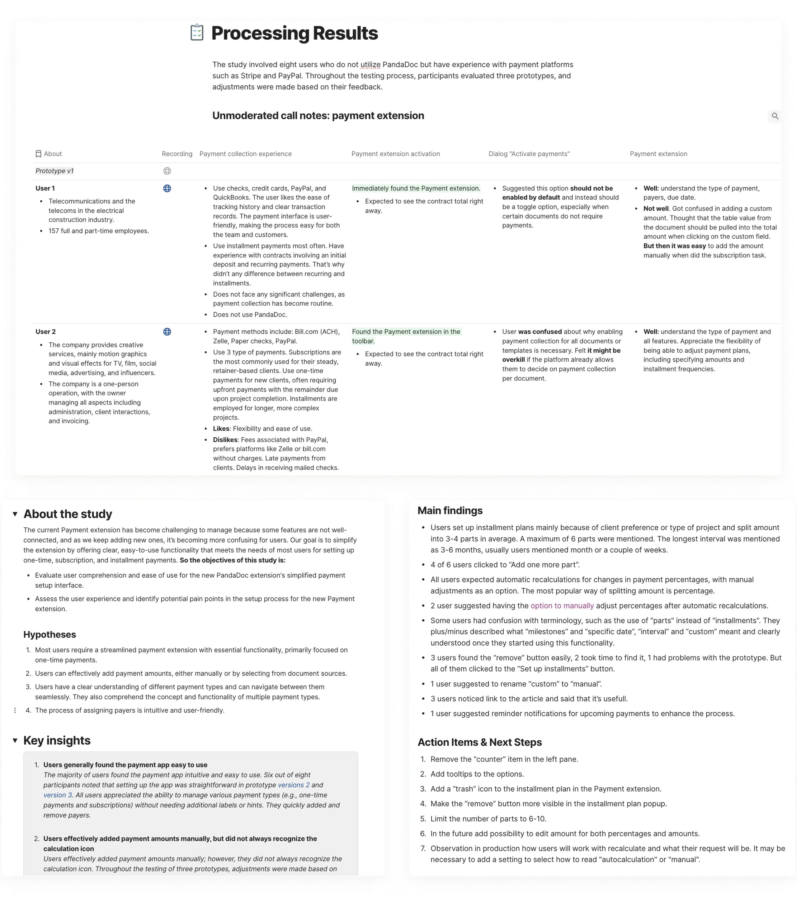
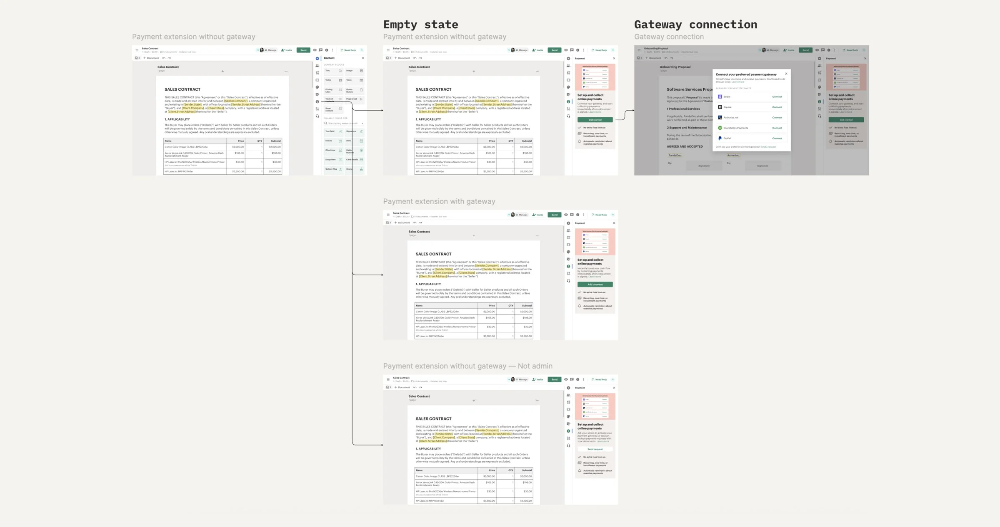
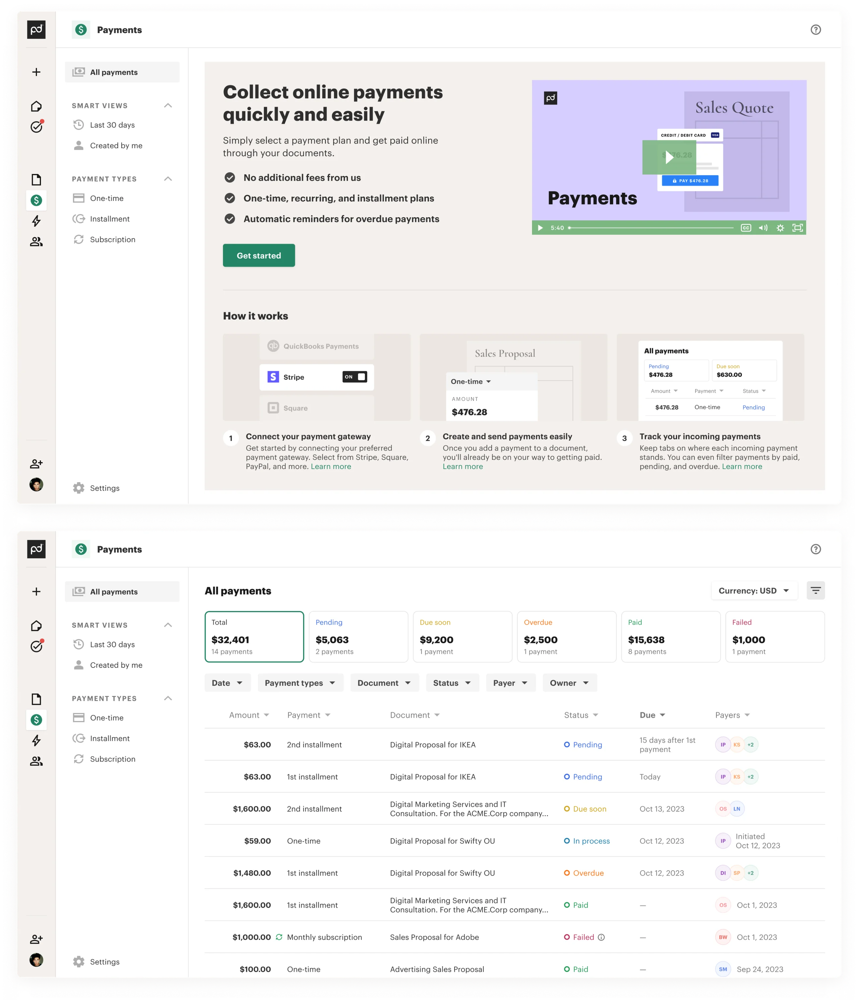
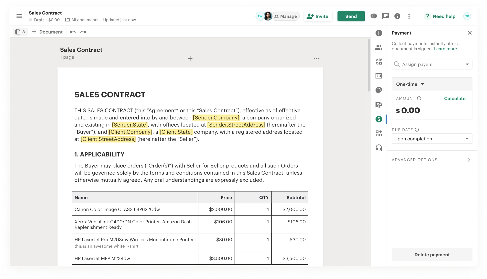
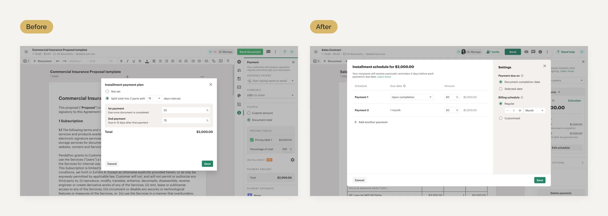
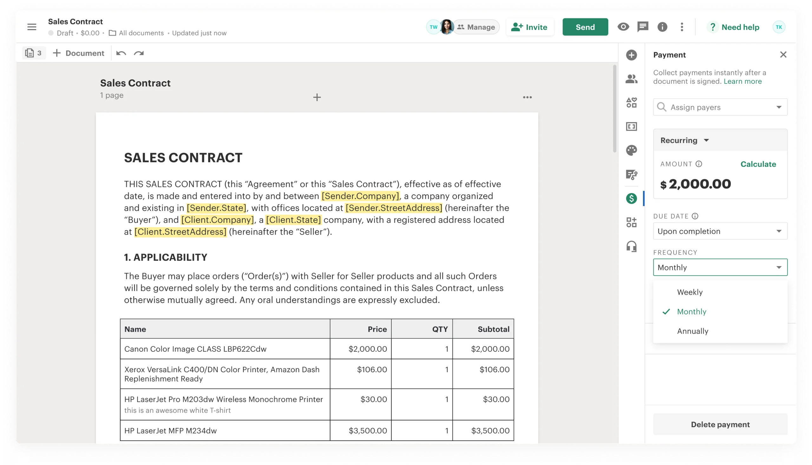

PandaDoc is a platform for automating and managing document workflows. As a Product Designer, I led the design of payment collection features through integrations with gateways like Stripe, QuickBooks Payments, and others — enabling users to collect payments seamlessly and securely right after a document is signed. This functionality streamlines revenue collection and improves cash flow without disrupting the document workflow.
Our team was tasked with a strategic goal: to evolve this functionality in a way that boosts key metrics such as user growth, retention, and company revenue — by enhancing the user experience and introducing new capabilities.

When I joined the PandaDoc team, payments could already be added to documents — but users encountered several limitations that affected adoption and flexibility, which we tackled through gradual, systematic improvements. To better understand how users interact with the payment functionality, I:

I began by improving payment adoption through refining the user experience based on direct user feedback. The main goal was to simplify navigation — making it easy for users to discover and set up payments within a document without additional guidance.
As part of this initiative, I conducted both moderated and unmoderated user tests. Participants first clicked where they expected to find payment settings. After just a few interviews, it became clear that, for users responsible for collecting payments, this functionality is a core part of their job to be done.

To address this, we implemented the following solutions:

We also developed a Payment Dashboard to allow users to track transaction statuses directly within PandaDoc — eliminating the need to switch to external services. It included functionality for sending reminders and updating payment statuses. The dashboard also became an additional entry point for connecting a payment gateway.

The payment setup process was simplified, and automatic amount calculation was added when a pricing table or quote is included in the document — allowing users to quickly choose the type of payment they want to collect. This concept performed very well during user testing.

The installments feature was completely redesigned — enabling users to split the total amount into any number of payments and define the amounts as fixed values or percentages.

Recurring payments were introduced as a new payment type, enabling users to configure both the frequency and number of payments. They could also choose when the payment should begin — immediately after signing, as a delayed automatic charge, or via a manually sent invoice.
This flexibility positively impacted pricing table adoption, as users increasingly leveraged it to set up recurring payments.
